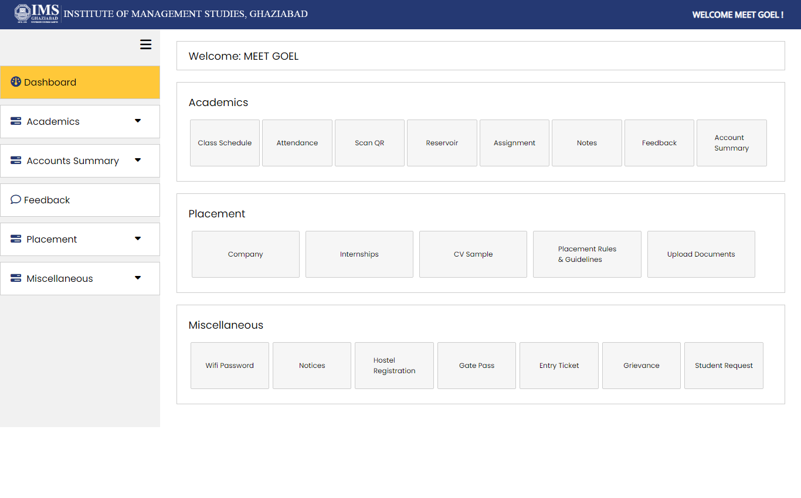
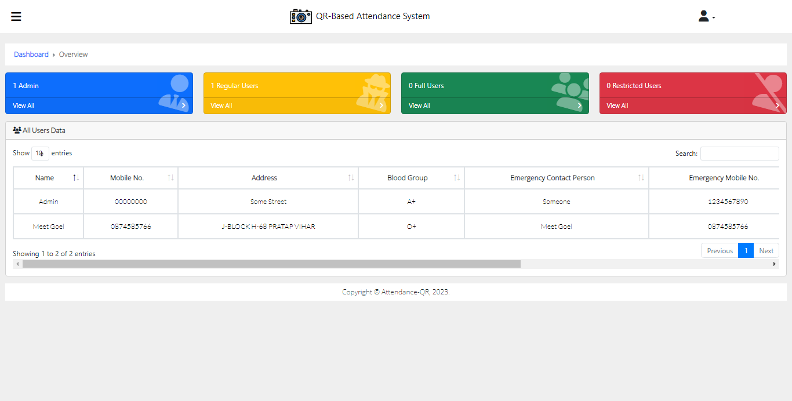
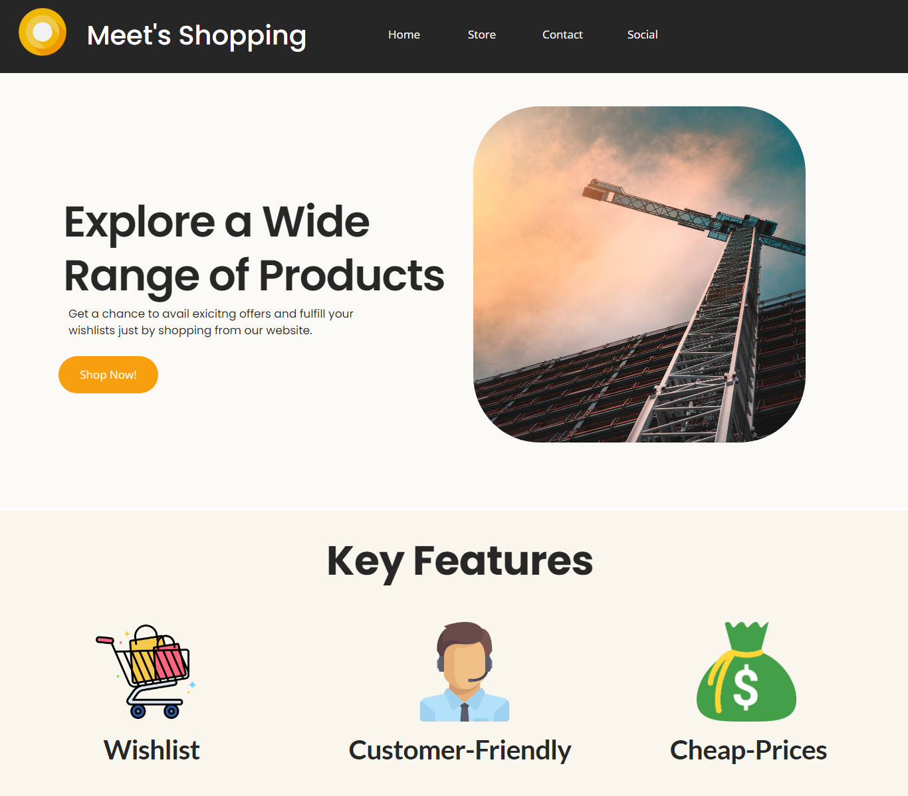
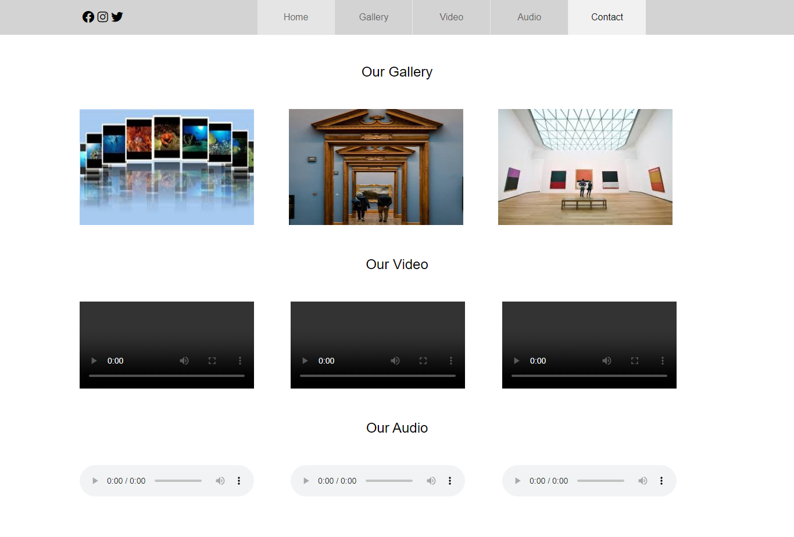
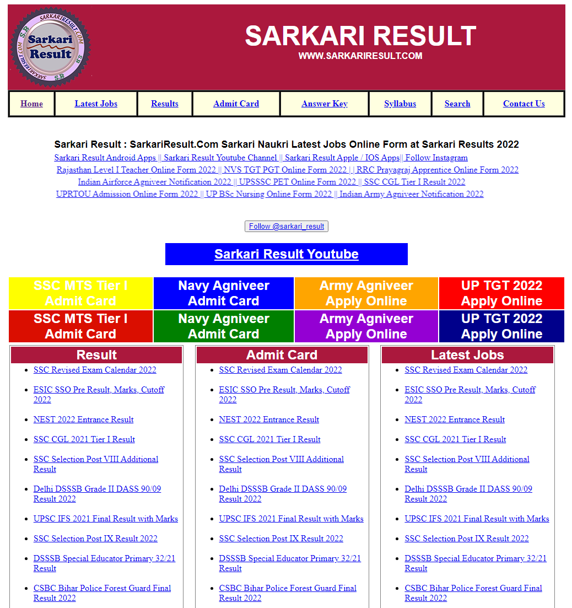
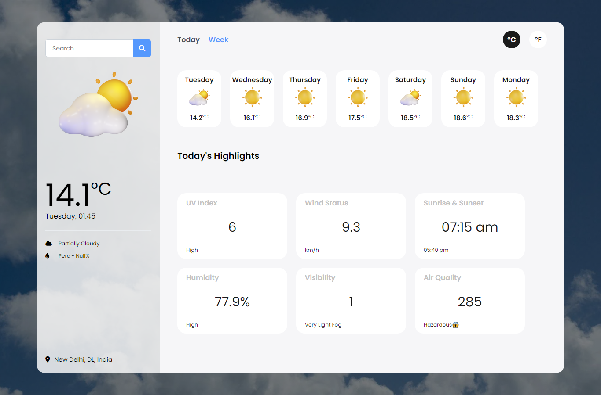
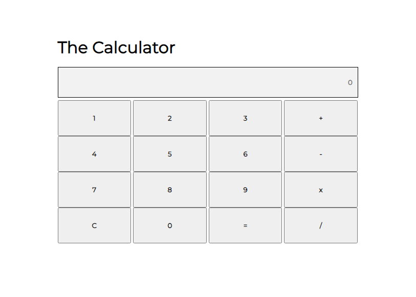

Meet Goel
Data scientist in Berlin. My master’s thesis measured how well multilingual models spot offensive comments in Kannada, Tamil and Malayalam when only 50 to 500 labelled examples exist.
Finishing my MSc at Gisma University, winter 2026. Open to junior data scientist, ML engineer and data analyst roles in Germany.
Macro-F1 by language and training setup
Results from my thesis, averaged over 3 seeds. 50, 100 and 500 are target-language labels given to XLM-R; Qwen columns are in-context examples. Dashed cells are full-data reference systems. Hover or tap a cell for details.
The Malayalam row stays near 0.49: the model predicts “not offensive” for almost every post.
What the thesis found
Cross-lingual and few-shot offensive language detection in low-resource Dravidian languages: an empirical study of XLM-R and large language models. Supervised by Prof. William Morrison.
-
Zero-shot transfer works, except for Malayalam
Trained only on English, German and Hindi, XLM-R reached 0.605 Macro-F1 on Kannada and 0.588 on Tamil with no target-language labels. Malayalam stayed at the majority-class floor of 0.497.
-
More labels help Kannada and Tamil, not Malayalam
With 500 labels, Kannada rose to 0.687 and Tamil to 0.677, around 90% of the full-data baseline. Malayalam did not move.
-
Fine-tuning beats a small LLM in all six cases
Fine-tuned XLM-R outperformed Qwen2.5-1.5B-Instruct with in-context examples in every language and shot setting. Qwen failed the opposite way on Malayalam: 14.8% accuracy from flagging most posts as offensive.
-
Accuracy hides collapse, and one seed can mislead
Eight of nine Malayalam runs scored exactly the “always not offensive” numbers: 96.1% accuracy but 0.490 Macro-F1. A class-weighted TF-IDF model reached 0.71 on the same data, so the failure is class imbalance, not the language.
Built with Python, PyTorch, Hugging Face Transformers, XLM-RoBERTa, Qwen2.5, scikit-learn, LIME. Data: DravidianCodeMix.
Work
Data science and machine learning projects, newest first. Every one links to its code.
-
2026
NLP Code
Master’s thesis: offensive language detection in Dravidian languages
Zero-shot, few-shot and in-context learning compared across Kannada, Tamil and Malayalam, with LIME explanations and seed-robustness checks.
PyTorch, Transformers, XLM-R, Qwen2.5, LIME
-
2025
App Code
Cinemate: movie recommender with an AI chat assistant
Content-based recommendations from TF-IDF and cosine similarity, fuzzy search, analytics charts and a GPT-4 chatbot in a Streamlit app.
Python, scikit-learn, Streamlit, OpenAI API
-
2025
NLP Code
Phishing email classifier
Text classification separating phishing emails from legitimate ones, from cleaning and vectorising to model comparison.
Python, NLP, scikit-learn
-
2025
Deep learning Report
Rice variety image classification
A deep learning model that sorts rice grains into categories from images.
Python, deep learning, computer vision
-
2025
Machine learning Code
Walmart weekly sales forecasting
Time-series forecasting of store sales with feature engineering on holidays, prices and store attributes.
Python, pandas, scikit-learn
-
2025
Machine learning Code
Bangalore house price prediction
A regression model estimating property prices, with outlier cleaning, feature engineering and model evaluation.
Python, pandas, scikit-learn
-
2025
Machine learning Code
Titanic survival prediction
Classification with logistic regression after preprocessing and feature engineering on passenger data.
Python, scikit-learn
-
2025
Data analysis Code
Netflix catalogue and gym member analysis
Two exploratory analyses: content trends on Netflix, and workout and health patterns in a gym dataset.
Python, pandas, Matplotlib, Seaborn
-
2024
AI tool Code
J.A.R.V.I.S. AI voice assistant
A desktop voice assistant with text and image generation through the Hugging Face API, weather lookups, system commands and face recognition to unlock it.
Python, Hugging Face, OpenCV, JavaScript
No projects in this category yet. Choose “All” to see everything.
Earlier web development projects, 2022 to 2024
Built during my bachelor’s, before I moved into data science. They show the front-end and PHP/MySQL side of my skills.

ERP management portal
QR attendance tracker- Expense tracker

Shopping website
Multimedia website
Results portal clone
Weather app
Calculator
Experience and education
-
2024 to 2026
MSc Data Science, AI and Digital Business
Gisma University of Applied Sciences, Potsdam
Thesis on cross-lingual NLP for low-resource languages. Coursework in machine learning, AI applications in Python, and big data business projects.
-
Dec 2023
Winter training in full-stack development
IIT Kanpur
Web development, databases and server-side scripting through hands-on projects.
-
Sep to Oct 2023
Intern, data-driven application development
OpenWeaver, India
Built an e-commerce app with transactional workflows, set up SMTP for automated emails and integrated the Razorpay API to capture payment data.
-
Aug to Oct 2023
Virtual intern, Python with data structures and algorithms
YBI Foundation
-
2021 to 2024
Bachelor of Computer Applications
IMS Ghaziabad University Courses Campus
With a value-added diploma in data analytics. President of the IT Club, class representative, student coordinator for two hackathons. Best Performer of the Batch award.
Skills
- Machine learning and NLP
- scikit-learn, PyTorch, TensorFlow, Keras, Hugging Face Transformers, XLM-R, in-context learning with LLMs, LIME
- Data
- Python, pandas, NumPy, SQL, MySQL, ETL pipelines, exploratory analysis
- Visualisation and BI
- Matplotlib, Seaborn, Power BI, Tableau, Excel
- Apps and engineering
- Streamlit, Git, Java, C/C++, HTML, CSS, JavaScript, PHP, Bootstrap
- Certificates
- Databases and SQL for Data Science with Python (IBM), Data Science Methodology (IBM), Process Data from Dirty to Clean (Google), Analyze Data to Answer Questions (Google), Database Design (Oracle)
- Languages
- English B2, German A2, Hindi native
Hiring for a junior data role?
I’m based in Berlin and can start after my MSc. Email is the fastest way to reach me.